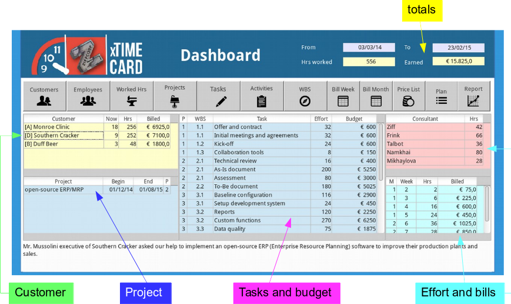

xTimeCard
Created sabato 21 febbraio 2015
Background
This manual guides you step by step to a successful time billing of your services, our approach consider project management principles and use LibreOffice Base, we created xTimeCard for our own business and now we share with you. However this software was meant for personal and educational purpose, allows a project manager to perform tracking over employees or external consultants within the project and prepare for billing or control.
Dashboard
When you first run xTimeCard, click on “Dashboard” and look the performance of your business. Every information is available and dynamically updated while you select between customers and projects.

Tables
- Activities (rate)
- Customers
- Employees
- Projects
- Tasks
Data views
- Dashboard
- Register working activity
- WBS
- Bill by week
- Bill by month
Reports
- Price list
- Plan (estimated effort and cost)
- Journal
Sample data
The sample data refer the funny story of Southern Cracker and Ziff Corp. Review the project outline and deliverables for more details.
Summary
@xtimecard @bill @accounting @software
Backlinks:
Home:Software